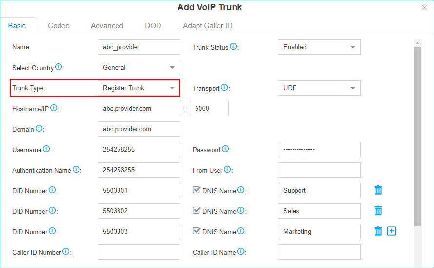

If you bought a VoIP account with user name and password, you need to set up a
Register Trunk on Yeastar Cloud PBX.
Assume that you bought a SIP trunk from the ITSP provider,
and the trunk information is displayed as below. We will introduce how to set up a
Register Trunk according to the trunk information.
Note: If you need more information about any of the settings on the Add VoIP Trunk
page, see the
VoIP Trunk
Settings for reference.
Table 1. SIP Trunk Information
| Provider address |
abc.provider.com |
| Protocol |
SIP |
| SIP Port |
5060 |
| Transport |
UDP |
| Username |
254258255 |
| Authenticate name |
254258255 |
| Password |
05JsOmsIS54SYh |
| Provided DID numbers |
5503301 / 5503302 / 5503303 |
-
Go to , click Add.
-
Set the trunk as a Register Trunk and enter the trunk information that is
provided by the ITSP.

- Name: Set the trunk name.
- Trunk Status: Select
Enabled.
- Protocol: Select the protocol that is provided by
the ITSP.
- Trunk Type: Select Register
Trunk.
- Select Country: Select
General.
Note: You can select a country then select a supported ITSP to get a
pre-configured template.
- Transport: Select the transport that is provided
by the ITSP.
- Hostname/IP: Enter the IP address or the domain
of the ITSP.
- Domain: Enter the IP address or the domain of the
ITSP.
- Username: Enter the username to register to the
ITSP.
- Authentication Name: Enter the authentication
name to register to the ITSP.
- Password: Enter the password that is associated
with the username.
- From User: Optional. Keep this field blank if not
needed.
- DID Number: If the trunk DID
number is different from the trunk authentication name, you need to
enter the DID number.
- DNIS Name: Bind a DNIS name
for a DID number, when users call the DID number, the DNIS name will be
displayed on ringing phone.
- Caller ID Number: Optional. This feature requires
support from the ITSP. Keep this field blank if not needed.
- Caller ID Name: Optional. This feature requires
support from the ITSP. Keep this field blank if not needed.
- Enable Outbound Proxy: Optional. Set the outbound
proxy if the ITSP needs.
- Enable SLA: Optional. After enabling SLA, users can share this
trunk to make outbound calls and receive inbound calls by BLF keys on
their phones. In this way, Inbound Route settings and Outbound Route
settings for the trunk is invalid.
- Optional:
Click other tabs on the configuration page, configure the relevant settings
according to your VoIP account.
-
Click Save and Apply.
You can check the trunk status in PBX
Monitor. If the trunk status shows  , the trunk is
ready for use.
, the trunk is
ready for use.